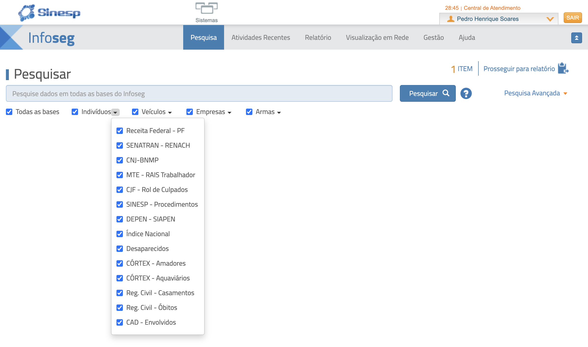

Inteligência · Segurança pública
SINESP / INFOSEG
SFC
GPF
Plataforma nacional do Ministério da Justiça que reúne informações de segurança pública de órgãos federais e estaduais. Uma única consulta alcança várias bases.
Operacional
Apoia o campo e a verificação de dados durante a fiscalização.
Investigativo
Cruza informações para aprofundar análises e apurações.
Estratégico
Dá visão agregada para planejar e priorizar.
Acesso restrito por perfil e função, vinculado à atividade de fiscalização.

Planejamento
ações conjuntas com outros órgãos
Intimações
mais precisão ao localizar envolvidos
Segurança
protege agentes em abordagens
Dia de Fiscal 2026 · Planejamento e inteligência das fiscalizações · SFC / GPF — ANTAQ
18 / 21